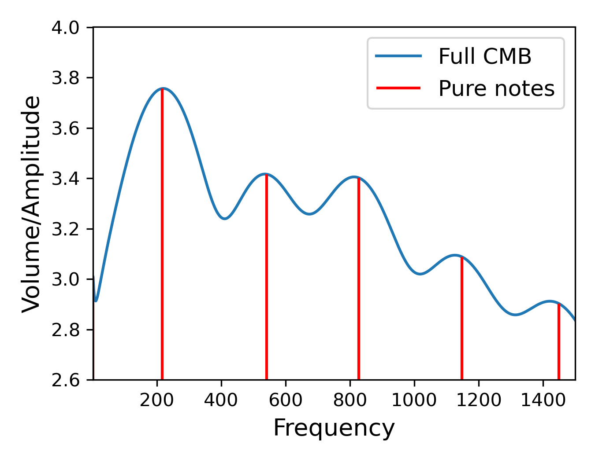
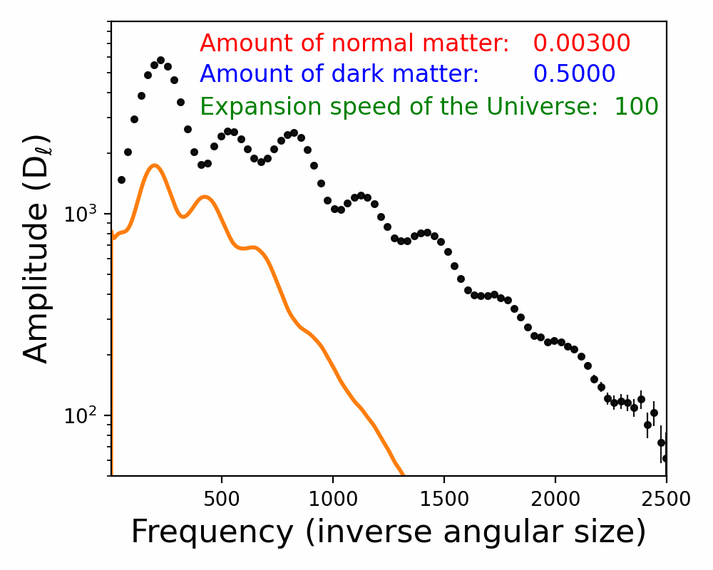

How do we learn about the properties of the Universe from the CMB?
In the What causes the CMB pattern? section, we showed a simple way of extracting some information from the CMB.
Here the story is split into two parts. First, we use sound as an analogy for the CMB, because pitch, loudness, and spectra are familiar ideas. Second, we turn to image analysis and Fourier tools to show how cosmologists convert complicated sky maps into precise measurements of the Universe.
Section 1: Sound
Section 2: Image Analysis
Section 1
Sound and spectra
The early Universe supported pressure waves, so sound gives us a useful analogy. Here we develop this step by step, moving from everyday ideas like pitch and volume to the way cosmologists read the CMB power spectrum.
Why use sound?
A sound can be described by which pitches are present and how loud each one is. In exactly the same spirit, the CMB can be described by which spatial scales are present and how strong each scale is.
That is why spectra are such a powerful bridge: they turn complicated patterns into something we can compare, interpret, and measure.
Core translation
Pitch maps to frequency.
Volume maps to amplitude.
A sound spectrum maps to the CMB power spectrum.
Sound 1
Pitch and volume
Pitch is the frequency of a wave, while volume is its amplitude. A spectrum is simply a plot showing how much amplitude lives at each frequency.
For a single pure tone, the spectrum is simple: one strong bar at one pitch. This is the cleanest possible example of how a spectrum encodes information about a signal.
Single-tone spectrum
Sound 2
Try it yourself
Speak into a microphone and watch the measured spectrum update in real time. This makes the abstract graph feel physical: different sounds produce different spectral shapes.
Live microphone spectrum
What you are seeing
This graph shows the strength of different frequencies in your voice right now. A whistle, hum, or spoken vowel will each produce a different shape.
Sound 3
Cosmic sound waves
Recall from earlier - the CMB is made up of primordial sound waves. Not just one but a pattern composed of many sound waves combined as shown the in the animation below.
Sound 4
Acoustic spikes
We can use the tools outlined above to study these sound waves!
The CMB is not a single pure note. It contains a broad range of frequencies, but some scales are emphasized more than others. Those preferred scales show up as peaks in the power spectrum.
He we turn that structure into audio by shifting the cosmic frequencies into the audible range. Listening first to the main peaks and then to the full signal helps make the pattern more intuitive.

The cosmic chords only
The full cosmic symphony
Sound 5
Identifying the cosmic orchestra
Once you think in terms of pitch and volume, the next step is to ask what changes the spectrum. In cosmology, changing the contents or age of the Universe shifts the heights and positions of the CMB peaks.
That makes the power spectrum diagnostic. By measuring its shape, we can work backward and infer what the Universe is made of.
Sound 6
The real Universe
Finally lets compare these ideas to actual data. The observed CMB power spectrum matches the predictions of the cosmological model remarkably well.
That agreement is what allows us to measure quantities such as the age of the Universe and the amount of dark matter with such precision.

Section 2
Image analysis
Sound gets us comfortable with spectra. Image analysis then does the real cosmological work. Everything below is the existing Fourier and CMB material, starting from the basic idea of a Fourier mode and building up to cosmological inference.
The central move
Instead of describing the sky map pixel by pixel, we rewrite it as a combination of waves on different angular scales. That turns a random-looking picture into a structured measurement.
Connection to the sound section
A Fourier transform for images plays the same role as a spectrum for sound: it tells you which scales are present and how strong they are.
Image 1
What is a Fourier Mode?
One of the most powerful, but counterintuitive, tools scientists use is Fourier analysis.
The key idea here is to decompose your original signal into a series of waves. The app below shows what all the possible 2D waves look like. Each wave is characterised by three properties:
- The frequency: how fast is the wave oscillating?
- The amplitude: how large is the wave?
- The phase: when is the wave at its lowest point?
Image 2
Image Analysis 101
In Fourier analysis, we take an image and express it in terms of the amplitudes and phases for every possible wavelength.
Try this out for yourself. Upload a picture and see how it looks in Fourier space. The left image shows your uploaded image, the center panel is the amplitude for each different frequency and the final panel shows the phase.
The filter option demonstrates a few operations we can apply to the image in Fourier space and how they impact the original image. These provide some insight into the different roles of Fourier scale and information in the phases vs amplitudes.
Real Space
Amplitude
Phase
Image 3
Image Analysis applied to the CMB
Next we apply these methods to a simulated observation of the CMB. Use the app below to generate a mock CMB. What do you notice about the Fourier space amplitudes and phases?
CMB Map
Amplitude
Phase
The power spectrum
The CMB is random. Each realization looks different. The CMB phases carry no information. However, on average the CMB amplitude looks the same in every direction in Fourier space. This embodies a physical principle that the sky is isotropic. This means we can reduce the 2D Fourier space object to 1D, which we call the power spectrum. This is the average 2D Fourier amplitude in a radial ring. The structure of the power spectrum contains the information of the CMB.
Image 4
Realize your own power spectrum
To get a better idea of what the power spectrum contains, try drawing different power spectra. Pressing the generate button will generate a new random draw, each with the same power spectrum. Similarly, different structures in the power spectrum lead to different types of features in the maps.
Power Spectrum P(k)
Draw and generate.
Gaussian Random Field
Image 5
The cosmic test
Judging whether two maps are the same is hard. Try to guess the power spectrum from one realization of the map. Even if you have the exact power spectrum, do the maps look the same?
Draw the Power Spectrum
Press "New Challenge" to begin. This editor uses logarithmic k and P(k) axes.
Target
Your GRF
Image 6
Connecting to the Universe's properties
Taken together these show that judging the information in a CMB map directly is hard. The CMB map is random, but that does not mean it contains no information.
Fourier tools allow us to access the coherent structure via the power spectrum. The final question is how cosmic information is contained in the power spectrum. That is explored below.